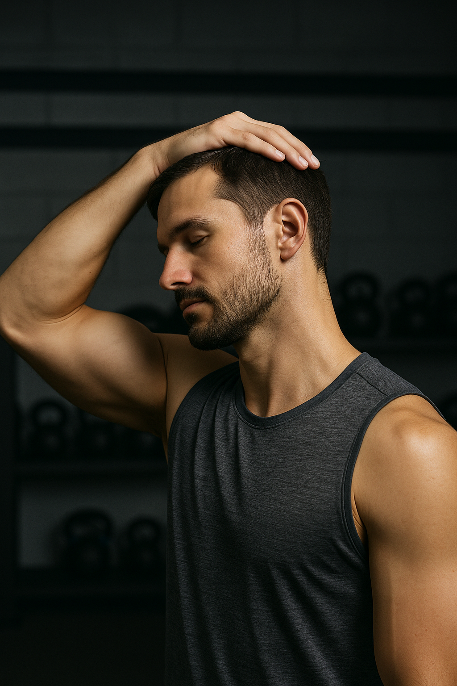

Chest Press (Lever Plate Loaded)
Kas grubu: Pectoralis Major (Sternal)
Ekipman: Lever Plate Loaded Chest Press Machine
Seviye: Orta - İleri

1️⃣ Lever chest press makinesine otur ve tutacakları göğüs hizasında kavra.
2️⃣ Nefes vererek kollarını düz olacak şekilde öne doğru uzat.
3️⃣ Göğüs kaslarını sıkıştırarak tepe noktada kısa bir süre bekle.
4️⃣ Nefes alarak kollarını yavaşça geri çek ve başlangıç pozisyonuna dön.
- Sırtını koltuğa tam dayalı tut, bel boşluğunu koru.
- Hareket boyunca dirsekleri çok açmadan kontrollü ilerle.
- Kas sıkışmasını artırmak için tam uzanma anında 1 saniye dur.